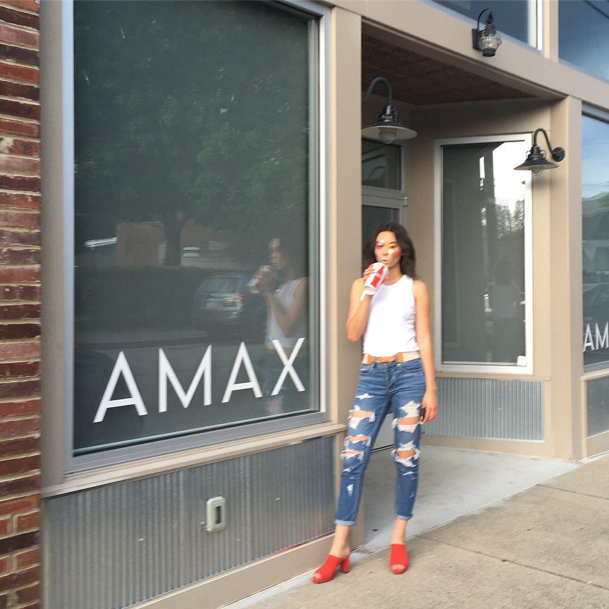
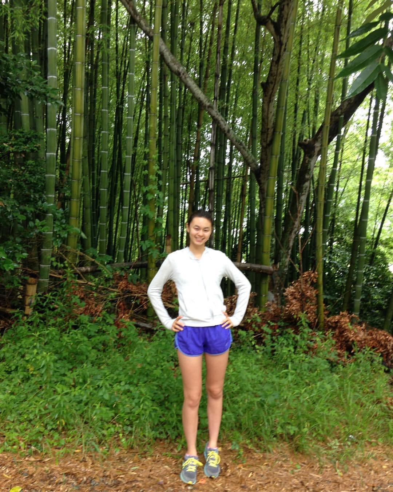

WELCOME TO MONET'S LIFE!
Today, you'll be learning facts about Monet Jones! Enjoy your time here!
BACKGROUND
Monet was born in Kentucky, USA on January 28, 2001. She moved to Japan in 2003. She attended elemenary school at Lindin Hall Elementary School in Japan.
She returned 2013 to Nashville, TN, and went to Sunset Middle School in Brentwood, TN. She is currently in highschool at Nolensville High School (12th grade), and she is part of the Kode With Klossy
Camp in Nashville. She's a cool gal (:

HOBBIES
Monet likes to:
excercise.
rock climbing.
lax.
coding.
watching movies/plays.
eating.
model.


FUN FACTS
Speaks Japanese fluently.
Can do weird arm things!!
Very flexible legs!!
Social Media